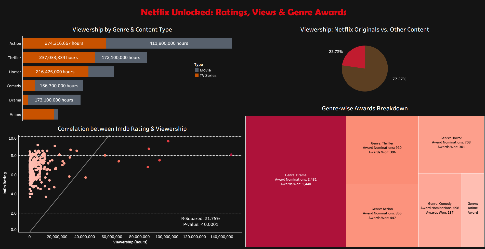

Statistical insights into factors influencing Netflix viewer engagement, supporting better content recommendations and audience targeting.
Analyzed 6 months of Netflix viewership data across 240 titles to identify what drives engagement. Integrated IMDb ratings, award data, and global availability to uncover statistical relationships and guide content strategy decisions.
Streaming platforms like Netflix need to optimize content promotion and acquisition. Understanding which factors drive viewership helps improve recommendations, increase engagement, and allocate marketing resources effectively. The aim was to determine key drivers of Netflix content viewership, quantify their impact, and provide actionable recommendations to enhance engagement and guide content strategy.
1. Cleaned and merged datasets from multiple sources
2. Explored viewership trends across type (Movie vs. Series), genre, and rating
3. Built regression models to quantify impact of content attributes on viewership
4. Conducted ANOVA to test differences across genres and interaction effects
5. Designed Tableau dashboards to visualize insights and trends
R-squared
Correlation
F-statistics
p-value
Regression Analysis:
ANOVA:
Two-Way ANOVA:
The analysis confirms that both content type and genre significantly shape Netflix viewership. While regression models had some limitations, they still provide meaningful insight into what drives engagement. These findings can support content strategy, especially around boosting underperforming genres or promoting viewer-preferred content types.
This project strengthened my skills in statistical modeling, diagnostic test interpretation, and multivariate analysis. It provided hands-on experience in evaluating interaction effects and translating statistical results into actionable business insights. Through this analysis, I developed a deeper understanding of audience segmentation and data-driven content strategy optimization in the streaming industry.

The analysis confirms that both content type and genre significantly shape Netflix viewership. While regression models had some limitations, they still provide meaningful insight into what drives engagement. These findings can support content strategy, especially around boosting underperforming genres or promoting viewer-preferred content types.
This project strengthened my skills in statistical modeling, diagnostic test interpretation, and multivariate analysis. It provided hands-on experience in evaluating interaction effects and translating statistical results into actionable business insights. Through this analysis, I developed a deeper understanding of audience segmentation and data-driven content strategy optimization in the streaming industry.
View full analysis on GitHub
← Back